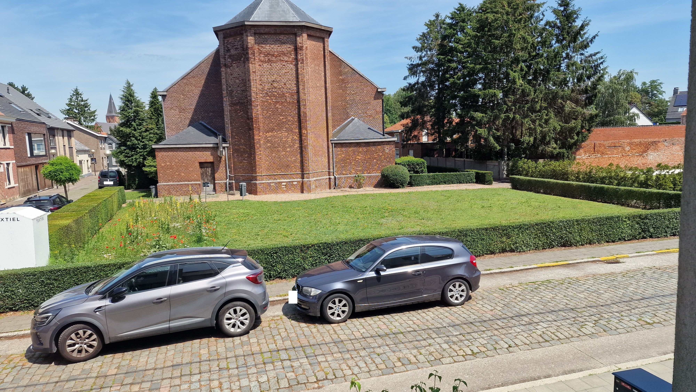
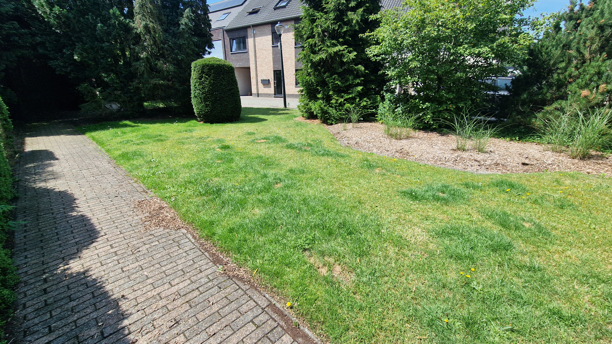
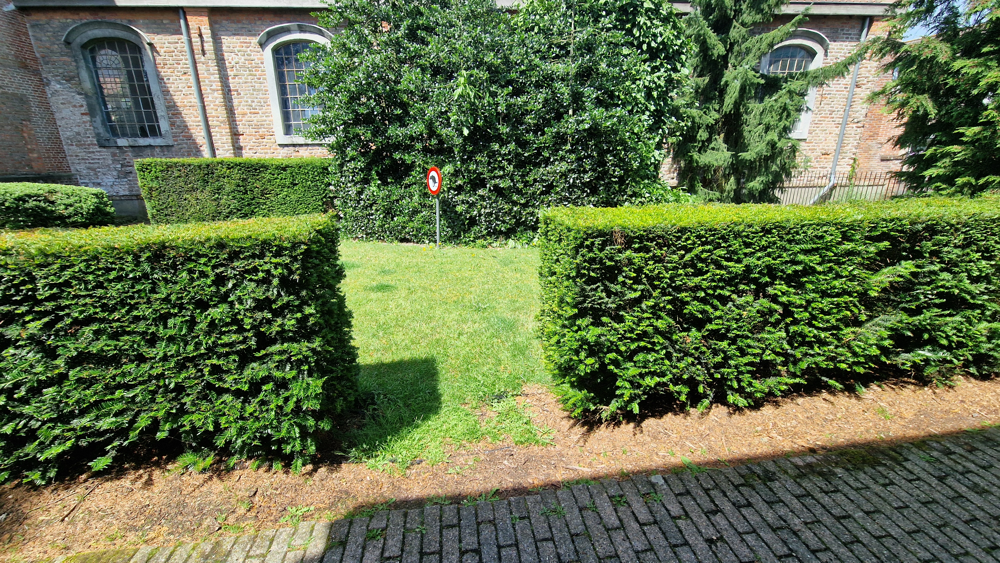
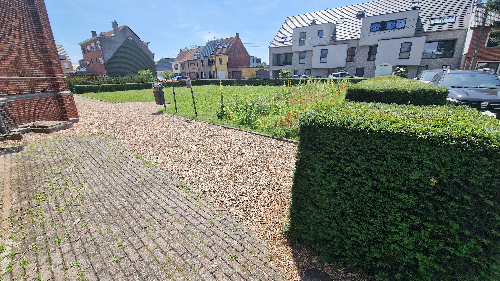

Koelte & leven
Volwassen bomen behouden, meer bloemen en gevarieerde beplanting toevoegen en regenwater ter plaatse laten infiltreren.
VRIJWILLIG INITIATIEF · KOEWACHT
Ik verzamel als vrijwilliger ideeën voor de omgeving van de voormalige Sint-Philippus en Jacobuskerk. Meer groen, veilige wandelpaden en ruimte om elkaar te ontmoeten: wat vindt de buurt belangrijk?
Verken de vier deelgebieden ↓Ik verzamel ideeën; ik neem zelf geen eindbeslissingen.
ÉÉN OMGEVING, VIER KANSEN
De kerk en haar volwassen bomen bepalen het karakter van deze plek. Het idee is om dat te behouden. Herstelde paden, meer gevarieerd groen en waterdoorlatende parkeerplaatsen zijn mogelijke manieren om de omgeving aangenamer te maken. Deze voorstellen zijn een vertrekpunt om samen over na te denken.
Kies een deelgebied en ontdek wat er kan veranderen.

01Vlakke paden, grote bomen en een rustige plek om even te zitten.
Ontdek het voorstel
02Een open groene passage met bloemrijke beplanting en ruimte om te wandelen.
Ontdek het voorstel
03Vrij spelen, elkaar ontmoeten en parkeren op een duidelijke plek.
Ontdek het voorstel 04
04Een overzichtelijke parking, waterdoorlatende vakken en schaduw.
Ontdek het voorstelWAT WINT DE BUURT?
Volwassen bomen behouden, meer bloemen en gevarieerde beplanting toevoegen en regenwater ter plaatse laten infiltreren.
Vlakke wandelpaden en vaste parkeerplaatsen maken de omgeving overzichtelijker. Fietsers krijgen meer ruimte om te passeren.
Een open speelweide en fijne zitplekken geven bewoners van alle leeftijden een reden om hier tijd door te brengen.
MIJN ROL ALS VRIJWILLIGER
Ik maak deze website als vrijwilliger om ideeën, wensen en aandachtspunten van buurtbewoners te verzamelen. De teksten en beelden helpen om het gesprek op gang te brengen. Dit is geen officieel of goedgekeurd uitvoeringsplan.
Ik neem zelf geen eindbeslissingen over de inrichting, het budget of de uitvoering. Die liggen bij de bevoegde instanties en eigenaars. Eigendom, toegankelijkheid, parkeerbehoefte en technische haalbaarheid moeten eerst worden onderzocht.
Het masterplan rekent met een indicatief totaalbudget van € 1.000.000, inclusief studies, uitvoering en onvoorzien. De definitieve financiering en raming moeten nog worden vastgesteld; dit voorstel kan niet volledig uit het buurtbudget van € 15.000 worden betaald.
Ik wil de verzamelde ideeën via het participatieplatform delen. Via lokale Facebookgroepen kunnen meer buurtbewoners meedenken. Een reactie op deze website is input voor het voorstel en houdt geen toezegging over uitvoering in.
Deel je vraag of idee ↗